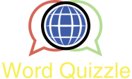

- Generated by
 1.8.13
1.8.13
|  |
WQG - WordsQuizzleGame
v1.5.8
Gioco di traduzione di parole Italiane a Inglesi
|
Il progetto consiste nell’implementazione di un sistema di sfide di traduzione italiano-inglese tra utenti registrati al servizio. Gli utenti registrati possono sfidare i propri amici ad una gara il cui scopo è quello di tradurre in inglese il maggiore numero di parole italiane proposte dal servizio. Il sistema consente inoltre la gestione di una rete sociale tra gli utenti iscritti. L’applicazione è implementata secondo una architettura client server.
Di seguito sono specificate le operazioni offerte dal servizio WQ. In sede di implementazione è possibile aggiungere ulteriori parametri se necessario.
Registrazione di un utente:
Per inserire un nuovo utente, il server mette a disposizione una operazione registra_utente(nickUtente,password). Il server risponde con un codice che può indicare l’avvenuta registrazione, oppure, se il nickname è già presente, o se la password è vuota, restituisce un messaggio d’errore. Come specificato in seguito, le registrazioni sono tra le informazioni da persistere.
login(nickUtente, password):
Login di un utente già registrato per accedere al servizio. Il server risponde con un codice che può indicare l’avvenuto login, oppure, se l’utente ha già effettuato la login o la password è errata, restituisce un messaggio d’errore.
logout(nickUtente):
Effettua il logout dell’utente dal servizio.
aggiungi_amico (nickUtente, nickAmico):
Registrazione di un’amicizia: aggiungere un amico alla cerchia di amici di un utente. Viene creato un arco non orientato tra i due utenti (se A è amico di B, B è amico di A). Il Server risponde con un codice che indica l’avvenuta registrazione dell’amicizia oppure con un codice di errore, se il nickname del nodo destinazione/sorgente della richiesta non esiste, oppure se è stato richiesto di creare una relazione di amicizia già esistente. Non è necessario che il server richieda l’accettazione dell’amicizia da parte di nickAmico.
lista_amici(nickUtente):
Utilizzata da un utente per visualizzare la lista dei propri amici, fornendo le proprie generalità. Il server restituisce un oggetto JSON che rappresenta la lista degli amici.
sfida(nickUtente, nickAmico):
L’utente nickUtente intende sfidare l’utente di nome nickAmico. Il server controlla che nickAmico appartenga alla lista di amicizie di nickUtente, in caso negativo restituisce un codice di errore e l’operazione termina. In caso positivo, il server invia a nickAmico una richiesta di accettazione della sfida e, solo dopo che la richiesta è stata accettata, la sfida può avere inizio (se la risposta non è stata ricevuta entro un intervallo di tempo T1 si considera la sfida come non accettata). La sfida riguarda la traduzione di una lista di parole italiane in parole inglesi, nel minimo tempo possibile. Il server sceglie, in modo casuale, K parole da un dizionario contenente N parole italiane da inviare successivamente, una alla volta, ai due sfidanti. La partita può durare al massimo un intervallo di tempo T2. Il server invia ai partecipanti la prima parola. Quando il giocatore invia la traduzione (giusta o sbagliata), il server invia la parola successiva a quel giocatore. Il gioco termina quando entrambi i giocatori hanno inviato le traduzioni alle K parole o quando scade il timer. La correttezza della traduzione viene controllata dal server utilizzando un servizio esterno, come specificato nella sezione seguente. Ogni traduzione corretta assegna X punti al giocatore; ogni traduzione sbagliata assegna Y punti negativi; il giocatore con più punti vince la sfida ed ottiene Z punti extra. Per ogni risposta non inviata (a causa della scadenza del timer) si assegnano 0 punti. Il punteggio ottenuto da ciascun partecipante alla fine della partita viene chiamato punteggio partita. I valori espressi come K, N, T1, T2, X, Y e Z sono a discrezione dello studente.
mostra_punteggio(nickUtente):
Il server restituisce il punteggio di nickUtente (chiamato “punteggio utente”) totalizzato in base ai punteggi partita ottenuti in tutte le sfide che ha effettuato.
mostra_classifica(nickUtente):
Il server restituisce in formato JSON la classifica calcolata in base ai punteggi utente ottenuti da nickUtente e dai suoi amici.
Nella realizzazione del progetto devono essere utilizzate molte tecnologie illustrate durante il corso.
In particolare:
1.8.13